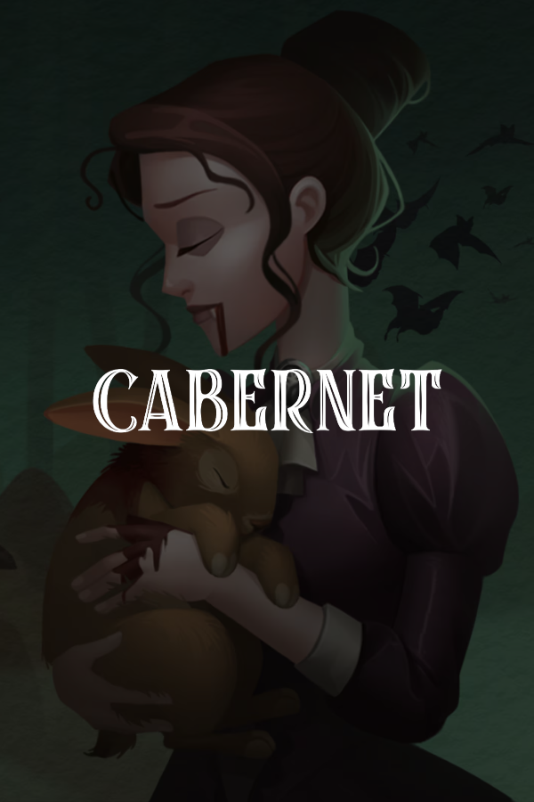

Cabernet
Every archived year-end list appearance, including placement and points earned.
About the Game
Feature List Higher Society The Countess has invited you to a world of decadence and intrigue. What price does she ask you to pay? Dusk to DawnYour time is your own. Will you learn, hunt, ensnare or save in the time you have while the sun is down? Unleash Your FangsThe freedom of flight. Hiding as an invisible ghost. Entrancing your meal with a gentle song. How will you use your new power? Sacrifice or SacrilegeYou were once like the humans of this town. Decent. Well-meaning. Flawed. Will you protect them or abandon them in your new unlife? About the Game Cabernet is a 2D narrative RPG set in a 19th century Eastern European inspired world, with a modern twist. Guide Liza, a young vampire struggling with her morality and the supernatural world she has been pulled into. Will you retain your humanity or descend further into the horror you have become? Prepare to explore a hidden world of political intrigue, class conflict, and decadent corruption. Use the moonlit sky to plan your next feast and explore. Mingle among vampiric society and the humans who feed them. Uncover who can aid your new kin and whose only purpose is to be drained. Vampirism isn't just an unholy transformation of your body-- it also threatens to transform your mind. Will you choose to indulge your empathetic humanity or embrace your newfound nihilism? But to lure your next meal somewhere safe and secluded, you'll need to understand who they are and what they desire. A kind-hearted, alcoholic coachman? A fraying newlywed couple? A greedy, yet charming charlatan? Their lives are yours to aid or unravel. Art, literature, history, science, these are the skills you'll require to succeed. Your knowledge will be your greatest weapon in a world where the cunning drain the brutal of life.
| Released | 2025-02-20 |
|---|---|
| Developer | Party for Introverts |
| Publisher | Akupara Games |
| Genres | Adventure, RPG, Simulation, Indie |
| Platforms | PC |
SingleplayerSteam AchievementsFull controller supportSteam CloudRPGStory Rich2DHorrorFemale Protagonistrole-playingPoint & ClickChoices Matter
Game information provided by RAWG.
Points by Year
List History
| Year | Source | List | Placement | Points |
|---|---|---|---|---|
| 2025 | GameSpot | The Best Games Of 2025 | Unranked | 1 |
| 2025 | NPR | The best games of 2025, picked by NPR's staff | Unranked | 1 |